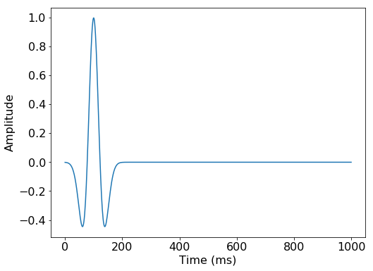
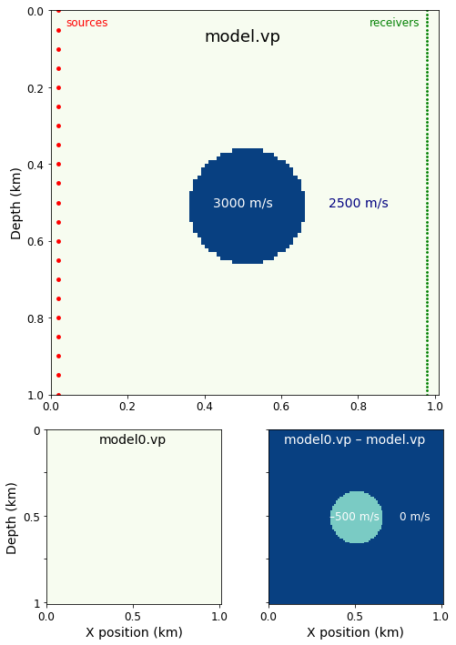
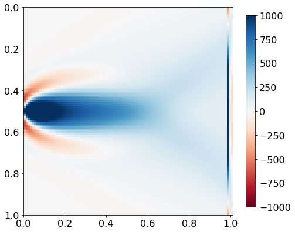
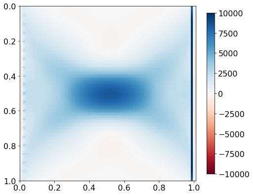
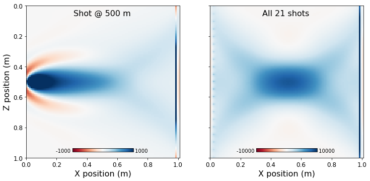

import numpy as np
import matplotlib.pyplot as plt
%matplotlib inline
Preface: Installing Devito (do not include in manuscipt)
This tutorial and the coming second part are based on Devito version 3.1.0. It requires the installation of the full software with examples, not only the code generation API. To install:
git clone -b v3.1.0 https://github.com/opesci/devito cd devito conda env create -f environment.yml source activate devito pip install -e .
That final dot is important, don't miss it out!
Useful links
Geophysics tutorial
Full-waveform inversion 2: adjoint modeling
Mathias Louboutin1*, Philipp Witte1, Michael Lange2, Navjot Kukreja2, Fabio Luporini2, Gerard Gorman2, and Felix J. Herrmann1,3
1 Seismic Laboratory for Imaging and Modeling (SLIM), The University of British Columbia
2 Imperial College London, London, UK
3 now at Georgia Institute of Technology, USA
Corresponding author: mloubout@eoas.ubc.ca
Introduction
This tutorial is the second part of a three part tutorial series on full-waveform inversion (FWI), in which we provide a step by step walk through of setting up forward and adjoint wave equation solvers and an optimization framework for inversion. In Part 1 (Louboutin et al., 2017), we showed how to use Devito to set up and solve acoustic wave equations with (impulsive) seismic sources and sample wavefields at the receiver locations to forward model shot records. In the second part of this tutorial series, we will discuss how to set up and solve adjoint wave equations with Devito and from that, how we can calculate gradients and function values of the FWI objective function.
The gradient of FWI is most commonly computed via the adjoint state method, by cross-correlating forward and adjoint wavefields and summing the contributions over all time steps (Plessix, 2006). Calculating the gradient for one source location consists of three steps:
-
Solve the forward wave equation to create a shot record. The time varying wavefield must be stored for use in step 3; techniques such as subsampling can be used to reduce the storage requirements.
-
Compute the data residual (or misfit) between the predicted and observed data.
-
Solve the corresponding discrete adjoint model using the data residual as the source. Within the adjoint (reverse) time loop, cross correlate the second time derivative of the adjoint wavefield with the forward wavefield. These cross correlations are summed to form the gradient.
We start with the definition and derivation of the adjoint wave equation and its Devito stencil and then show how to compute the gradient of the conventional least squares FWI misfit function. As usual, this tutorial is accompanied by all the code you need to reproduce the figures. Go to github.com/seg/tutorials-2018 and follow the links.
A simple experiment
To demonstrate the gradient computation in the simplest possible way, we perform a small seismic transmission experiment with a circular imaging phantom, i.e. a constant velocity model with a circular high velocity inclusion in its centre, as shown in Figure 1. For a transmission experiment, we place 21 seismic sources on the left-hand side of the model and 101 receivers on the right-hand side.
We will use the forward propagator from part 1 to independently model the 21 "observed" shot records using the true model. As the initial model for our gradient calculation, we use a constant velocity model with the same velocity as the true model, but without the circular velocity perturbation. We will then model the 21 predicted shot records for the initial model, calculate the data residual and gradient for each shot, and sum them to obtain the full gradient.
++ Figure 1 is generated later in the manuscript ++
Figure 1: (a) The velocity model, with sources and receivers arranged vertically. (b) The initial estimate. © The difference between the model and the initial estimate.
The adjoint wave equation
Adjoint wave equations are a main component in seismic inversion algorithms and are required for computing gradients of both linear and non-linear objective functions. To ensure stability of the adjoint modeling scheme and the expected convergence of inversion algorithms, it is very important that the adjoint wave equation is in fact the adjoint (transpose) of the forward wave equation. The derivation of the adjoint wave equation in the acoustic case is simple, as it is self-adjoint if we ignore the absorbing boundaries for the moment. However, in the general case, discrete wave equations do not have this property (such as the coupled anisotropic TTI wave equation (Zhang et al., 2011)) and require correct derivations of their adjoints. We concentrate here, as in part 1, on the acoustic case and follow an optimize-discretize approach, which means we write out the adjoint wave equation for the continuous case first and then discretize it, using finite difference operators of the same order as for the forward equation. With the variables defined as in part 1 and the data residual \delta d(x,y,t; x_r, y_r), located at x_r, y_r (receiver locations) as the adjoint source, the continuous adjoint wave equation is given by:
The adjoint acoustic wave equation is equivalent to the forward equation with the exception of the damping term \eta(x,y) \mathrm{d}v(t,x,y)/\mathrm{d}t, which contains a first time derivative and therefore has a change of sign in its adjoint. (A second derivative matrix is the same as its transpose, whereas a first derivative matrix is equal to its negative transpose and vice versa.)
Following the pattern of part 1, we first define the discrete adjoint wavefield \mathbf{v} as a Devito TimeFunction object. For reasons we'll explain later, we do not need to save the adjoint wavefield:
# NOT FOR MANUSCRIPT
from examples.seismic import Model, demo_model, plot_velocity, plot_perturbation
shape = (101, 101) # Number of grid point (nx, nz)
spacing = (10., 10.) # Grid spacing in m. The domain size is now 1km by 1km
origin = (0., 0.) # Need origin to define relative source and receiver locations
model = demo_model('circle-isotropic',
vp=3.0,
vp_background=2.5,
origin=origin,
shape=shape,
spacing=spacing,
nbpml=40)
# For the manuscript, we'll re-form the model using the Vp field from
# this newly created model.
vp = model.vp
model0 = demo_model('circle-isotropic',
vp=2.5,
vp_background=2.5,
origin=origin,
shape=shape,
spacing=spacing,
nbpml=40)
t0 = 0. # Simulation starts a t=0
tn = 1000. # Simulation last 1 second (1000 ms)
dt = model.critical_dt # Time step from model grid spacing
nt = int(1 + (tn-t0) / dt) # Discrete time axis length
time = np.linspace(t0, tn, nt) # Discrete modelling time
# NOT FOR MANUSCRIPT
from devito import TimeFunction
v = TimeFunction(name="v", grid=model.grid,
time_order=2, space_order=4,
save=False)
Now symbolically set up the PDE:
pde = model.m * v.dt2 - v.laplace - model.damp * v.dt
As before, we then define a stencil:
# NOT FOR MANUSCRIPT
from devito import Eq
from sympy import solve
stencil_v = Eq(v.backward, solve(pde, v.backward)[0])
Just as for the forward wave equation, stencil_v defines the update for the adjoint wavefield of a single time step. The only difference is that, while the forward modeling propagator goes forward in time, the adjoint propagator goes backwards in time, since the initial time conditions for the forward propagator turn into final time conditions for the adjoint propagator. As for the forward stencil, we can write out the corresponding discrete expression for the update of the adjoint wavefield:
with \text{dt} being the time stepping interval. Once again, this expression does not contain any (adjoint) source terms so far, which will be defined as a separate SparseFunction object. Since the source term for the adjoint wave equation is the difference between an observed and modeled shot record, we first define an (empty) shot record residual with 101 receivers and coordinates defined in rec_coords. We then set the data field rec.data of our shot record to be the data residual between the observed data d_obs and the predicted data d_pred. The symbolic residual source expression res_term for our adjoint wave equation is then obtained by injecting the data residual into the modeling scheme (residual.inject). Since we solve the time-stepping loop backwards in time, the res_term is used to update the previous adjoint wavefield v.backward, rather than the next wavefield. As in the forward modeling example, the source is scaled by \mathrm{dt}^2/\mathbf{m}. In Python, we have:
# NOT FOR MANUSCRIPT
from examples.seismic import Receiver
nshots = 21 # Number of shots to create gradient from
nreceivers = 101 # Number of receiver locations per shot
# Recs are distributed across model, at depth of 20 m.
z_extent, _ = model.domain_size
z_locations = np.linspace(0, z_extent, num=nreceivers)
rec_coords = np.array([(980, z) for z in z_locations])
# NOT FOR MANUSCRIPT
from examples.seismic import PointSource
residual = PointSource(name='residual', ntime=nt,
grid=model.grid, coordinates=rec_coords)
res_term = residual.inject(field=v.backward,
expr=residual * dt**2 / model.m,
offset=model.nbpml)
# NOT FOR MANUSCRIPT
rec = Receiver(name='rec', npoint=nreceivers, ntime=nt,
grid=model.grid, coordinates=rec_coords)
# NOT FOR MANUSCRIPT
from examples.seismic import RickerSource
# At first, we want only a single shot.
# Src is 5% across model, at depth of 500 m.
z_locations = np.linspace(0, z_extent, num=nshots)
src_coords = np.array([(z_extent/50, z) for z in z_locations])
# NOT FOR MANUSCRIPT
f0 = 0.010 # kHz, peak frequency.
src = RickerSource(name='src', grid=model.grid, f0=f0,
time=time, coordinates=src_coords[nshots//2])
# NOT FOR MANUSCRIPT
plt.plot(src.time, src.data)
plt.xlabel("Time (ms)")
plt.ylabel("Amplitude")
plt.show()

# NOT FOR MANUSCRIPT
# Generates Figure 1
from matplotlib.gridspec import GridSpec
# Set up figure, grid, and parameters.
fig = plt.figure(figsize=(8, 12))
gs = GridSpec(3, 2)
ax0 = fig.add_subplot(gs[:2, :2])
ax1 = fig.add_subplot(gs[2, 0])
ax2 = fig.add_subplot(gs[2, 1])
extent = [model.origin[0], model.origin[0] + 1e-3 * model.shape[0] * model.spacing[0],
model.origin[1] + 1e-3*model.shape[1] * model.spacing[1], model.origin[1]]
model_param = dict(vmin=2.5, vmax=3.0, cmap="GnBu", aspect=1, extent=extent)
diff_param = dict(vmin=-1, vmax=0, cmap="GnBu", aspect=1, extent=extent)
# Part (a)
im = ax0.imshow(np.transpose(model.vp), **model_param)
ax0.scatter(*rec_coords.T/1000, lw=0, c='green', s=8)
ax0.scatter(*src_coords.T/1000, lw=0, c='red',s=24)
ax0.set_ylabel('Depth (km)', fontsize=14)
ax0.text(0.5, 0.08, "model.vp", ha="center", color='k', size=18)
ax0.text(0.5, 0.5, "3000 m/s", ha="center", va='center', color='w', size=14)
ax0.text(0.8, 0.5, "2500 m/s", ha="center", va='center', color='navy', size=14)
ax0.text(0.04, 0.04, "sources", ha="left", color='r', size=12)
ax0.text(0.96, 0.04, "receivers", ha="right", color='green', size=12)
ax0.set_ylim(1, 0)
plt.setp(ax0.get_xticklabels(), fontsize=12)
plt.setp(ax0.get_yticklabels(), fontsize=12)
# Part (b)
im = ax1.imshow(np.transpose(model0.vp), **model_param)
ax1.set_xlabel('X position (km)', fontsize=14)
ax1.set_yticklabels([0, '', 0.5, '', 1])
ax1.text(0.5, 0.08, "model0.vp", ha="center", color='k', size=14)
ax1.set_ylabel('Depth (km)', fontsize=14)
plt.setp(ax1.get_xticklabels(), fontsize=12)
plt.setp(ax1.get_yticklabels(), fontsize=12)
# Part (c)
im = ax2.imshow(np.transpose(model0.vp - model.vp), **diff_param)
ax2.set_xlabel('X position (km)', fontsize=14)
ax2.set_yticklabels([])
ax2.text(0.5, 0.08, "model0.vp – model.vp", ha="center", color='w', size=14)
ax2.text(0.5, 0.5, "–500 m/s", ha="center", va='center', color='w', size=12)
ax2.text(0.85, 0.5, "0 m/s", ha="center", va='center', color='w', size=12)
plt.setp(ax2.get_xticklabels(), fontsize=12)
plt.setp(ax2.get_yticklabels(), fontsize=12)
plt.savefig("../Figures/Figure_1.pdf")
plt.savefig("../Figures/Figure_1.png", dpi=400)
plt.show()

In this demonstration, there is no real data. Instead we will generate the 'observed' data via forward modeling with the true model model. The synthetic data is generated from the initial model model0. The resulting data, and their difference, are shown in Figure 2.
# NOT FOR MANUSCRIPT
from examples.seismic.acoustic import AcousticWaveSolver
solver = AcousticWaveSolver(model, src, rec, space_order=4)
# Compute 'real' data with forward operator.
obs , _, _ = solver.forward(src=src, m=model.m)
CustomCompiler: compiled /tmp/devito-gx10ovxj/7a282d6885f4ad3a7b16fd67992b9457900f0291.c [0.62 s]
=========================================================================================
Section section_1<714,1> with OI=0.73 computed in 0.000 s [0.52 GFlops/s]
Section section_2<714,101> with OI=1.37 computed in 0.001 s [2.20 GFlops/s]
Section main<714,179,179> with OI=1.95 computed in 0.090 s [8.15 GFlops/s, 0.25 GPts/s]
=========================================================================================
# NOT FOR MANUSCRIPT
# Compute initial data with forward operator.
pred, u0, _ = solver.forward(src=src, m=model0.m, save=True)
CustomCompiler: compiled /tmp/devito-gx10ovxj/460b72ec62af10f5fed261f3a591dc9679cffa88.c [0.25 s]
=========================================================================================
Section section_1<714,1> with OI=0.73 computed in 0.000 s [0.26 GFlops/s]
Section section_2<714,101> with OI=1.37 computed in 0.001 s [1.86 GFlops/s]
Section main<714,179,179> with OI=1.95 computed in 0.113 s [6.49 GFlops/s, 0.20 GPts/s]
=========================================================================================
# NOT FOR MANUSCRIPT
fig = plt.figure(figsize=(15, 5))
extent = [model.origin[0], # Horizontal min
model.origin[0] + 1e-3 * model.shape[0] * model.spacing[0],
tn/1000, # Vertical min (bottom)
t0/1000] # Vertical max (top)
ma = np.percentile(obs.data, 99.5)
params = dict(vmin=-ma, vmax=ma, cmap="Greys", aspect=1, extent=extent)
text_params = dict(ha="center", color='w', size=16)
ax0 = fig.add_subplot(131)
im = plt.imshow(obs.data, **params)
ax0.set_ylabel('Time (s)', fontsize=16)
ax0.text(0.5, 0.08, "obs", **text_params)
plt.xticks(fontsize=10)
plt.yticks(fontsize=10)
ax1 = fig.add_subplot(132)
im = plt.imshow(pred.data, **params)
ax1.set_xlabel('Z position (km)', fontsize=16)
ax1.set_yticklabels([])
ax1.text(0.5, 0.08, "pred", **text_params)
plt.xticks(fontsize=10)
plt.yticks(fontsize=10)
ax2 = fig.add_subplot(133)
im = plt.imshow(pred.data - obs.data, **params)
ax2.set_yticklabels([])
ax2.text(0.5, 0.08, "pred – obs", **text_params)
plt.xticks(fontsize=10)
plt.yticks(fontsize=10)
plt.savefig("../Figures/Figure2.pdf")
plt.savefig("../Figures/Figure2.png", dpi=400)
plt.show()

Figure 2. Shot records for a shot at a Z position of 0.5 km. (a) The observed data, using the known model with the high velocity disc, contains a perturbation not present in (b) the 'predicted' data, using the initial estimate of the model, which contais no disc. © The residual.
Finally, we create the full propagator by adding the residual source expression to our previously defined stencil and set the flag time_axis=Backward, to specify that the propagator runs in backwards in time:
# NOT FOR MANUSCRIPT
from devito import Operator, Backward
op_adj = Operator([stencil_v] + res_term, time_axis=Backward)
In contrast to forward modeling, we do not record any measurements at the surface since we are only interested in the adjoint wavefield itself. The full script for setting up the adjoint wave equation, including an animation of the adjoint wavefield is available in adjoint_modeling.ipynb.
Computing the FWI gradient
The goal of FWI is to estimate a discrete parametrization of the subsurface by minimizing the misfit between the observed shot records of a seismic survey and numerically modeled shot records. The predicted shot records are obtained by solving an individual wave equation per shot location and depend on the parametrization \mathbf{m} of our wave propagator. The most common function for measuring the data misfit between the observed and modeled data is the \ell_2 norm, which leads to the following objective function (Lions (1971), Tarantola (1984)):
where the index i runs over the total number of shots n_\mathrm{s} and the model parameters are the squared slowness. Optimization problems of this form are called nonlinear least-squares problems, since the predicted data modeled with the forward modeling propagator (op_fwd() in part 1) depends nonlinearly on the unknown parameters \mathbf{m}. The full derivation of the FWI gradient using the adjoint state method is outside the scope of this tutorial, but conceptually we obtain the gradient by applying the chain rule and taking the partial derivative of the inverse wave equation \mathbf{A}(\mathbf{m})^{-1} with respect to \mathbf{m}, which yields the following expression (Plessix, 2006, Virieux and Operto, 2009):
The inner sum \text{time}=1,...,n_t runs over the number of computational time steps n_t and \ddot{\mathbf{v}} denotes the second temporal derivative of the adjoint wavefield \mathbf{v}. Computing the gradient of Equation 3, therefore corresponds to performing the point-wise multiplication (denoted by the symbol \odot) of the forward wavefields with the second time derivative of the adjoint wavefield and summing over all time steps.
To avoid the need to store the adjoint wavefield, the FWI gradient is calculated in the reverse time-loop while solving the adjoint wave equation. To compute the gradient \mathbf{g} for the current time step \mathbf{v}[\text{time}]:
The second time derivative of the adjoint wavefield is computed with a second order finite-difference stencil and uses the three adjoint wavefields that are kept in memory during the adjoint time loop (Equation 2).
In Devito we define the gradient as a Function since the gradient is computed as the sum over all time steps and therefore has no time dependence:
# NOT FOR MANUSCRIPT
from devito import TimeFunction, Function
# NOT FOR MANUSCRIPT
# This is the same u as in Part 1.
u = TimeFunction(name="u", grid=model.grid,
time_order=2, space_order=4,
save=True, time_dim=nt)
grad = Function(name="grad", grid=model.grid)
The update for the gradient as defined in Equations 4 and 5 is then:
grad_update = Eq(grad, grad - u * v.dt2)
Now we must add the gradient update expression to the adjoint propagator op_grad. This yields a single symbolic expression with update instructions for both the adjoint wavefield and the gradient:
op_grad = Operator([stencil_v] + res_term + [grad_update],
time_axis=Backward)
Solving the adjoint wave equation by running the following now computes the FWI gradient for a single source. Its value is stored in grad.data.
op_grad(u=u0, v=v, m=model0.m,
residual=pred.data-obs.data,
time=nt, dt=dt)
CustomCompiler: compiled /tmp/devito-gx10ovxj/ec66845144ec0c1fb8e1bb5f532cda21c551712e.c [0.28 s]
=========================================================================================
Section section_1<714,101> with OI=0.80 computed in 0.003 s [1.18 GFlops/s]
Section main<714,179,179> with OI=2.83 computed in 0.303 s [6.11 GFlops/s, 0.08 GPts/s]
=========================================================================================
# NOT FOR MANUSCIPT
plt.figure(figsize=(8,8))
plt.imshow(np.transpose(grad.data[40:-40,40:-40]), extent=extent, cmap='RdBu', vmin=-1e3, vmax=1e3)
plt.colorbar(shrink=0.75)
plt.show()

# NOT FOR MANUSCRIPT
tmp = grad.copy()
Now we can iterate over all the shot locations, running the same sequence of commands each time.
# NOT FOR MANUSCRIPT
from devito import configuration
configuration['log_level'] = 'WARNING'
# Create the symbols.
u0 = TimeFunction(name='u0', grid=model.grid, time_order=2, space_order=4, save=True, time_dim=nt)
u = TimeFunction(name='u', grid=model.grid, time_order=2, space_order=4, save=True, time_dim=nt)
v = TimeFunction(name='v', grid=model.grid, time_order=2, space_order=4, save=False)
# Define the wave equation, but with a negated damping term
eqn = model.m * v.dt2 - v.laplace - model.damp * v.dt
# Use SymPy to rearrange the equation into a stencil expression.
stencil = Eq(v.backward, solve(eqn, v.backward)[0])
# Define the residual injection.
residual = PointSource(name='residual', ntime=nt, coordinates=rec_coords, grid=model.grid)
res_term = residual.inject(field=v.backward, expr=residual * dt**2 / model.m, offset=model.nbpml)
# Correlate u and v for the current time step and add it to the gradient.
grad = Function(name='grad', grid=model.grid, dtype=model.m.dtype)
grad_update = Eq(grad, grad - u * v.dt2)
# Compose the operator.
op_grad2 = Operator([stencil] + res_term + [grad_update], time_axis=Backward)
# Iterate over the shots.
for i in range(nshots):
print("Source {} of {}".format(i, nshots))
# Opdate source location.
src.coordinates.data[0, :] = src_coords[i]
# Generate data from true model and current model estimate.
obs, _, _ = solver.forward(src=src, m=model.m)
pred, _, _ = solver.forward(src=src, m=model0.m, u=u0, save=True)
# Compute the gradient from the residual.
v = TimeFunction(name='v', grid=model.grid, time_order=2, space_order=4)
residual.data[:] = pred.data - obs.data
op_grad2(u=u0, v=v, m=model0.m, residual=residual, grad=grad, dt=dt)
configuration['log_level'] = 'INFO'
Source 0 of 21
Source 1 of 21
Source 2 of 21
Source 3 of 21
Source 4 of 21
Source 5 of 21
Source 6 of 21
Source 7 of 21
Source 8 of 21
Source 9 of 21
Source 10 of 21
Source 11 of 21
Source 12 of 21
Source 13 of 21
Source 14 of 21
Source 15 of 21
Source 16 of 21
Source 17 of 21
Source 18 of 21
Source 19 of 21
Source 20 of 21
# NOT FOR MANUSCRIPT
plt.figure(figsize=(8,8))
plt.imshow(np.transpose(grad.data)[40:-40, 40:-40], extent=extent, vmin=-1e4, vmax=1e4, cmap='RdBu')
plt.colorbar(shrink=0.75)
plt.show()

# NOT FOR MANUSCRIPT
# Generates Figure 3
from plot_utils import add_subplot_axes
fig = plt.figure(figsize=(12,6))
ax0 = fig.add_subplot(121)
ma = 1e3
im = ax0.imshow(np.transpose(tmp.data[40:-40,40:-40]), extent=extent, cmap='RdBu', vmin=-ma, vmax=ma)
cax = add_subplot_axes(ax0, [0.3, 0.075, 0.4, 0.02])
fig.colorbar(im, cax=cax, orientation='horizontal')
cax.text(0, 1, "{:.0f} ".format(-ma), ha='right', va='top', size=10)
cax.text(1, 1, " {:.0f}".format(ma), ha='left', va='top', size=10)
cax.set_axis_off()
ax0.text(0.5, 0.05, "Shot @ 500 m", ha='center', va='center', size=16)
ax0.set_xlabel('X position (m)', fontsize=16)
ax0.set_ylabel('Z position (m)', fontsize=16)
plt.setp(ax0.get_xticklabels(), fontsize=12)
plt.setp(ax0.get_yticklabels(), fontsize=12)
ax1 = fig.add_subplot(122)
ma = 1e4
im = ax1.imshow(np.transpose(grad.data[40:-40,40:-40]), extent=extent, cmap='RdBu', vmin=-ma, vmax=ma)
cax = add_subplot_axes(ax1, [0.3, 0.075, 0.4, 0.02])
fig.colorbar(im, cax=cax, orientation='horizontal')
cax.text(0, 1, "{:.0f} ".format(-ma), ha='right', va='top', size=10)
cax.text(1, 1, " {:.0f}".format(ma), ha='left', va='top', size=10)
cax.set_axis_off()
ax1.text(0.5, 0.05, "All {} shots".format(nshots), ha='center', va='center', size=16)
ax1.set_xlabel('X position (m)', fontsize=16)
ax1.set_yticklabels([])
plt.setp(ax1.get_xticklabels(), fontsize=12)
plt.setp(ax1.get_yticklabels(), fontsize=12)
plt.savefig("../Figures/Figure3.pdf")
plt.savefig("../Figures/Figure3.png", dpi=400)
plt.show()

Figure 3. Gradient plots for (a) a single shot at 0.5 km and (b) the sum of all shots.
This gradient can then be used for a simple gradient descent optimization loop, as illustrated at the end of the notebook adjoint_modeling.ipynb. After each update, a new gradient is computed for the new velocity model until sufficient decrease of the objective or chosen number of iteration is reached. A detailed treatment of optimization and more advanced algorithms will be described in the third and final part of this tutorial series.
Verification (do not include in manuscipt)
The next step of the adjoint modeling and gradient part is verification with unit testing, i.e. we ensure that the adjoints and gradients are implemented correctly. Incorrect adjoints can lead to unpredictable behaviour during and inversion and in the worst case cause slower convergence or convergence to wrong solutions.
Since our forward-adjoint wave equation solvers correspond to forward-adjoint pairs, we need to ensure that the adjoint defined dot test holds within machine precision (see **`tests/test_adjointA.py`** for the dot test). Furthermore, we verify the correct implementation of the FWI gradient by ensuring that using the gradient leads to first order convergence. The gradient test can be found in **`tests/test_gradient.py`**.
Conclusions
We need the gradient of the FWI objective function in order to find the optimal solution. It is computed by solving adjoint wave equations and summing the point-wise product of forward and adjoint wavefields over all time steps. Using Devito, the adjoint wave equation is set up in a similar fashion as the forward wave equation, with the main difference being the (adjoint) source, which is the residual between the observed and predicted shot records.
With the ability to model shot records and compute gradients of the FWI objective function, we are ready to demonstrate how to set up more gradient-based algorithms for FWI in Part 3 next month.
Acknowledgments
This research was carried out as part of the SINBAD II project with the support of the member organizations of the SINBAD Consortium. This work was financially supported in part by EPSRC grant EP/L000407/1 and the Imperial College London Intel Parallel Computing Centre.
References
[1] Michael Lange, Navjot Kukreja, Mathias Louboutin, Fabio Luporini, Felippe Vieira Zacarias, Vincenzo Pandolfo, Paulius Velesko, Paulius Kazakas, and Gerard Gorman. Devito: Towards a generic finite difference DSL using symbolic python. In 6th Workshop on Python for High-Performance and Scientific Computing, pages 67–75, 11 2016. doi: 10.1109/PyHPC.2016.9.
[2] J. L. Lions. Optimal control of systems governed by partial differential equations. Springer-Verlag Berlin Heidelberg, 1st edition, 1971. ISBN 978-3-642-65026-0.
[3] Mathias Louboutin, Philipp A. Witte, Michael Lange, Navjot Kukreja, Fabio Luporini, Gerard Gorman, and Felix J. Herrmann. Full-waveform inversion - part 1: forward modeling. Submitted to The Leading Edge for the tutorial section on October 30, 2017., 2017.
[4] Aaron Meurer, Christopher P. Smith, Mateusz Paprocki, Ondřej Čertík, Sergey B. Kirpichev, Matthew Rocklin, AMiT Kumar, Sergiu Ivanov, Jason K. Moore, Sartaj Singh, Thilina Rathnayake, Sean Vig, Brian E. Granger, Richard P. Muller, Francesco Bonazzi, Harsh Gupta, Shivam Vats, Fredrik Johansson, Fabian Pedregosa, Matthew J. Curry, Andy R. Terrel, Štěpán Roučka, Ashutosh Saboo, Isuru Fernando, Sumith Kulal, Robert Cimrman, and Anthony Scopatz. Sympy: symbolic computing in python. Peer J Computer Science, 3:e103, January 2017. ISSN 2376-5992. doi: 10.7717/peerj-cs.103. URL https: //doi.org/10.7717/peerj-cs.103.
[5] R.-E. Plessix. A review of the adjoint-state method for computing the gradient of a functional with geophysical applications. Geophysical Journal International, 167(2):495, 2006. doi: 10.1111/j.1365-246X.2006.02978.x. URL +http://dx.doi.org/10.1111/j.1365-246X.2006.02978.x
[6] Albert Tarantola. Inversion of seismic reflection data in the acoustic approximation. GEOPHYSICS, 49(8): 1259–1266, 1984. doi: 10.1190/1.1441754. URL https://doi.org/10.1190/1.1441754
[7] J. Virieux and S. Operto. An overview of full-waveform inversion in exploration geophysics. GEOPHYSICS, 74 (5):WCC1–WCC26, 2009. doi: 10.1190/1.3238367. URL http://library.seg.org/doi/abs/10.1190/1.3238367
[8] Yu Zhang, Houzhu Zhang, and Guanquan Zhang. A stable tti reverse time migration and its implementation. GEOPHYSICS, 76(3):WA3–WA11, 2011. doi: 10.1190/1.3554411. URL https://doi.org/10.1190/1.3554411.
© 2017 The authors — licensed CC-BY-SA